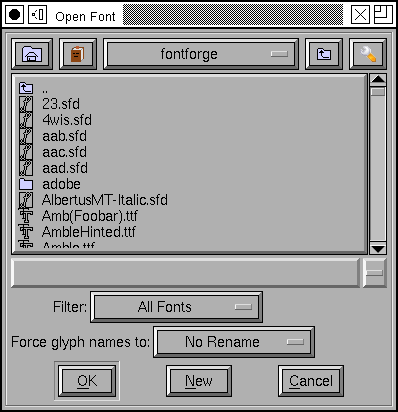

The File Menu¶
-
New Creates a new font with (by default) ISO 8859-1 (Latin1) encoding. The default encoding may be changed in the preference dlg.
-
Open - 
Brings up a file chooser and allows you to open a font in any of the formats FontForge understands.
If you open a truetype font containing bitmaps then you will be asked if you want to load some of the bitmaps as well as the outlines.
By default this dialog will display all files with extensions of pfa, pfb, pt3, sfd, ttf, otf, otb, t42, cef, cff, gsf, ttc, svg, ik, mf and bdf (possibly others as FontForge comes to support more formats). You can change this with the Filter pull down list – there are several standard filters, and you may define your own.
You may select multiple files (by holding down the shift or control keys when clicking on them), and all selected files will be opened.
FontForge can open macbinary resource files containing postscript and truetype fonts (it does not open bitmap fonts currently)
FontForge does not open Acorn RISC/OS files, but you can use acorn2sfd to convert them into an sfd file which FontForge can then open.
If you have mf and autotrace installed on your machine FontForge will process metafont’s mf files for you. But you might want to use pktrace, mftrace or some other standalone program to do the job.
When opening a TTC file, or a mac dfont – files which potentially contain several fonts – you will be given a dlg showing a list of all fonts in the file, you get to pick which you want to open. (FontForge does not provide a way to open all fonts in a file at once). If you know the fontname you are interested in you may append it to the filename in the open dlg as:
Helvetica.dfont(Helvetica Bold)or if you know the font indexHelvetica.dfont(0)(indeces start at 0, not 1).When FontForge opens a pdb file (one that contains palm bitmap fonts) it will open the first font it finds. In most formats it will list the available fonts in a file and ask which you want, but palm fonts contain no fontname so there is no way to identify them.
When importing a type3 font FontForge will ask you a few questions. It shouldn’t have to ask these questions, but this is an imperfect world and FontForge an imperfect program. In some rare cases FontForge will crash if it tries to do a remove overlap. The remove overlap functionality is important for interpreting stroked paths so you really should have it on. But if a crash happens then, turn it off (and the crash should not repeat, but some functionality will be lost).
Not all font formats that fontforge supports have standard extensions. Mac resource forks are one example, postscript cid, type0 and type3 fonts are another. FontForge can still open these formats, even if it fails to display the file. You can always type the file name in yourself if you don’t see it in the file list.
FontForge can also read (many) fonts out of a pdf file. FontForge usually does not list pdf files (because they aren’t really designed as mechanisms for transporting fonts and most such fonts will be incomplete due to subsetting and other optimizations), but you can always type in the name of one directly (or use the [Filter] button to define a filter for pdf files).
You can also force fontforge to rename all the glyphs in the font being read in to fit some standard naming convention. See the section on namelists for more information.
The dialog has several buttons at the top, one takes you to your home directory, one to the directory above the current one and the other two produce menus. The bookmark menu allows you to pick a directory from your list of bookmarks, and to add to or remove from your list of bookmarks, you may also move backwards and forwards on your directory stack. The tools menu allows you to rearrange how the dialog works. You may set it to show hidden files (on unix files beginning with “.” are “hidden”), you may set it so that directories are displayed amid other files, in alphabetical order, so that directories precede normal files, or so that there is a separate pane for directories.
-
Recent A submenu showing recently opened font files (it does not show the current font).
-
Close Closes the current window.
If this is a font view and the font has been changed, then it will ask whether you want to save the font. It will also close any outline glyph, bitmap glyph or metrics views associated with the font.
-
Save Saves the current file. If it is associated with a spline font database it will be saved there and a backup file will be created. If it is a new font, or if the font has been read from a font file, then a Save As dialog will pop up.
If you are editing a font “Ambrosia.sfd” then the backup file will be called “Ambrosia.sfd~”.
-
Save As... Allows you to give a new name to the current spline font database. Pops up a file picker.
Normally fonts are saved into “sfd” files (a single file containing all the information needed to regenerate your font), but you may choose to save it into a directory format where every glyph has its own file.
-
Save All Saves all changed fonts. If any have not been named, it will pop up a Save As file picker for that font.
-
Generate Fonts... This generates font files, both outline and bitmap. You may choose not to generate either, you may generate an afm file or a pfm file, you may select the type of postscript output, you may select which pixelsizes of bitmap to generate. (See that page for more info)
-
Generate Mac Family... This is only available if there are multiple fonts open in the same family, and if the current font is the “Plain” style of that family. It generates a mac FOND structure containing references to all family members, sfnt, and POST resources for all selected faces. It brings up a dlg very similar to the Generate fonts dialog, but one that includes a list of all potential faces for family members.
-
Generate TTC... This is only available if there are multiple fonts open (they need not be the same family). It opens a dialog similar to the above listing all open fonts. You select which fonts go into the ttc file and how they should be stored.
-
Revert Rereads the font from the file on the disk. All changes are lost.
-
Revert To Backup Only available in the font view. When FontForge saves an sfd file (with the Save command, not the Save As command) it creates a backup version of the file containing the old data (this file has the same name as the main branch with a “~” character appended to it). This command will revert to the backuped version of the file (if there is one).
-
Revert Glyph Only available in the font and outline views. Rereads the font from the sfd file on the disk searching for a glyph in that file with the same name as the current glyph. All changes to this glyph will be lost (but if the glyph has references then any changes made to the glyphs being refered to will still be visible), this command may be undone.
So if you have changed the name of the glyph this command will fail.
If the font did not come from an sfd file this command will fail.
If the font has been reencoded and the glyph has references this command may fail.
If you have made a global change to the font (like scaling it to a new em-size) then the results may not be appropriate.
-
Export... In the Outline view this allows you to export the splines that make up the glyph into an encapsulated postscript (.eps), pdf, svg or xfig format (.fig – the conversion to fig format is not the best) file. You may also have the glyph rasterized and output in either .xbm or .bmp (or png if you have that library) formats (FontForge will prompt you for a pixelsize. bmp also allows you to generate an anti-aliased image, and you will be prompted for bits per pixel. 1 bit per pixel is a bitmap).
In the Bitmap view this allows you to export the current glyph as either a .xbm or a .bmp (always as a bitmap) file.
This menu item is not available in the Font or Metrics Views.
-
Import... In the Font View this allows you to import one or several bitmap fonts (from a .bdf file or a ttf/otf/ttc file, TeX pk (gf) file, an X11 .pcf file or a mac dfont) and merge it into the list of bitmap sizes stored in the database. You may also load one bitmap font into the backgrounds of the outline glyphs (So “A” from the bitmap font goes into the background of the “A” outline glyph), this is to make tracing glyphs easier. Be careful, you need to load a big bitmap for autotrace to be useful.
Note
FontForge is unable to read an encoding from pk files, you will may need to set it with “Force Encoding” after you’ve loaded the pk file.
You may also load images into the glyph backgrounds. There are two ways to do this, you may either select several image files and they will be loaded consecutively into selected glyphs, or you may select an image template and all images whose filename match that template will be loaded into the backgrounds of the appropriate glyphs. Image templates look like “uni*.png” or “enc*.gif” or “cid*.tiff”. You select the template by selecting a filename which matches that template– So if you select “uni1100.gif” then all image files which start with “uni” and end with “.gif” and contain a valid unicode number will be loaded and placed in the appropriate place. Files named “enc*” or “cid*” are handled similarly except that they specify the current encoding (and the number must be in decimal rather than hex).
If you are editing a multi-layered font then you can also import an image into one of the foreground layers.
FontForge does best when given bitmap images. It will grey out the foreground and make the background transparent. It will also compress them when it stores them in the sfd file. It will handle most other image formats but does not try to optimize them in anyway. Please use bitmaps here.
You may load an encapsulated postscript file (or rather the sub-set of postscript that FontForge understands) into the foreground of glyphs. As with images above this may import either depending on the selection or a template.
If you have libxml2 on your system then FontForge will also be able to import svg files. As with postscript, only a subset of svg is understood).
In the Outline View this allows you to import an image into the background (see the above remark about bitmaps, or import eps or fig files into the foreground (the xfig conversion is really bad, the eps conversion is very limited).
In the Bitmap View this allows you to import a bitmap image into the glyph.
This menu item is not available in the Metrics View
In the font view you may select multiple files (by holding down the shift or control keys when clicking on them), and all selected bitmap fonts will be imported into the sfd.
-
Merge Feature Info... Only available in the font view window. This command will allow you to search for an adobe feature file (.fea) for feature/lookup information or an afm, ofm, tfm, pfm or mac resource file containing kerning pairs for the specified font. In many cases it will not be needed because when FontForge opens a .pfa or .pfb font it will automagically search for an appropriate .afm file in the same place. But sometimes afm files are stored in other directories. And sometimes you want to import information from TeX, from mac resource files or from windows pfm files.
Note
FontForge is unable to read an encoding from tfm/ofm files or from mac resource files, it is your responsibility to ensure that the encoding of your font matches that of the tfm file BEFORE merging kerning information. This is unfortunate, sorry.
Note
When loading a postscript font from a mac resource file, the associated kerning data will be found in the FOND stored with a bitmap font for this face. FontForge can’t guess the name of this file when loading the font. You must figure it out yourself.
-
Print... Not available in the bitmap view. Allows you to print out all the glyphs in the font, a text sample of the font, or specific glyphs at a very large scale.
See the section on printing for more information.
-
Execute Script... Only in the font view. Brings up a dlg and allows you to enter a script, which could be just calling a prewritten script file. There is a [Call] button in the dlg to help you locate any such files. The default extension is “*.pe” (postscript edit) but you can change that with the [Filter] button if you use something else.
-
Script Menu Only in the font view. You may define up to 10 scripts that you want to execute frequently and place them in this menu. The scripts may also be invoked by short cut with the first one being invoked by Control-Meta(Alt)-1, the second Control-Meta-2, and the tenth by Control-Meta-0. The scripts are set in the preferences dialog
-
Preferences... This pops up a dialog allowing you to configure various esoteric bits of fontforge.
A number of things, like the colors used in FontForge, that might be controlled from a preference window are controlled by X Resources below.
-
X Resource Editor... This dialog allows you to edit FontForge’s X Resources, you may either save them to a file for perminant storage, or change the current settings for this use of FontForge.
-
Quit Exits the program, prompting you whether to save any changed fonts.